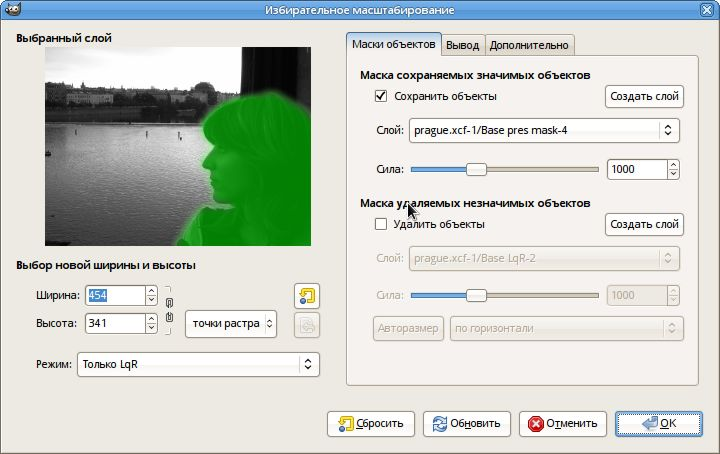
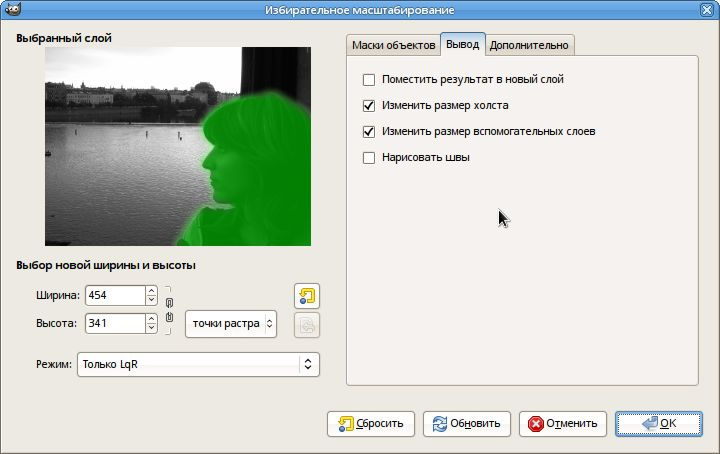
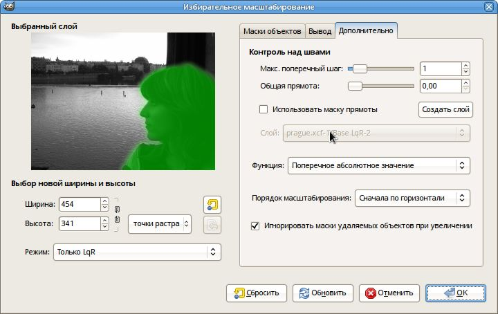

Извините, но русская версия справки не учитывает новшества версии 0.6.0. Обновление будет в 0.6.2.
Расширение «Избирательное масштабирование» является реализацией алгоритма, известного под названием «вырезание швов» (seam carving) и разработанного Шаи Авиданом (Shai Avidan) и Ариэлем Шамиром (Ariel Shamir).
Результатом действия эффекта является такое изменение размера изображения, при котором значимые объекты не растягиваются вовсе, в то время как незначимые объекты безопасно растягиваются или сужаются, либо вовсе удаляются из изображения.
При помощи расширения изображения можно как увеличивать, так и уменьшать, но увеличение дает более качественные результаты в том случае, если выполняется в несколько этапов. Для выбора значимых объектов, которые не должны быть так или иначе деформированы, либо незначимых объектов, которые нужно удалить, в качестве масок используются вспомогательные слои.
Более подробная справка по технологии приведена в разделе «Приложение: краткое описание техники вырезания швов» в конце.
Расширение работает как с активным слоем, так и с плавающим выделением. Оно также может работать с несколькими слоями через расширение "Filter all layers" и использовать GIMP Animation Package для обработки видео.
«Избирательное масштабирование» обрабатывает только слои целиком, поэтому если в слое есть выделение, оно сохраняется в канал и удаляется. Если же у слоя есть маска полупрозрачности, вы можете выбрать способ ее обработки (применить или удалить).
Описание пользовательского интерфейса

Выбор новой ширины и высоты
Обратите внимание на то, что конечный размер изображения при удалении может быть определен автоматически. Подробности приведены ниже.
Маски объектов
Краткое руководство
Самый простой способ вручную выбрать значимые или незначимые объекты, которые вы хотите оставить неизменными или, соответственно, удалить:
- Выберите слой (не плавающее выделение), размер которого хотите изменить, и вызовите расширение.
- Нажмите кнопку «Создать слой» в части «Маска сохраняемых значимых объектов», что создаст новый слой с альфа-каналом, прозрачный на 50%, и выберет новый цвет переднего плана (светло-зеленый).
- Перенесите диалог расширения куда-нибудь в сторону и кистью зарисуйте объекты, которые после смены размера должны сохранить свои пропорции.
- Вернитесь к диалогу и нажмите кнопку «Обновить», чтобы увидеть нарисованную только что маску в окне предпросмотра.
- Повторите то же самое для объектов, которые нужно удалить (цвет маски будет светло-красным).
Если вы хотите удалить части изображения, вы можете выбрать направление масштабирования (горизонталь или вертикаль), а затем нажать кнопку «Авторазмер» для автоматического определения конечного размера изображения (очень хорошо работает только с очень простыми масками).
Примечание №1: удаление объектов работает только при уменьшении размера изображения. При увеличении размера изображения маски удаляемых незначимых объектов всегда игнорируются; в противном случае замаскированные области оказались бы раздутыми, а не удаленными. Но если именно того вам и надо, на вкладке «Дополнительно» снимите флажок с параметра «Игнорировать маски удаляемых объектов при увеличении».
Примечание №2: сохранение значимых объектов невозможно при слишком большом увеличении, поскольку процесс увеличения объектов является обратной копией уменьшения, так что максимальное количество пикселов, которые можно добавить в слой, соответствует количеству несохраняемых пикселов. К примеру, у вас есть изображение размером 1000 пикселов в ширину, где область шириной в 800 пикселов вы пометили для защиты. В этом случае конечная ширина должна быть менее 1200 пикселов. Если вы хотите увеличить изображение еще больше, сделайте это в несколько шагов.
Полное описание
Вывод

На этой вкладке сгруппированы параметры, касающиеся вывода расширения.
- Поместить результат в новый слой
- Должен ли результат масштабирования помещаться в новый слой. По умолчанию выключено.
- Изменить размер холста
- Должен ли размер холста подгоняться под новый размер активного слоя. По умолчанию включено.
- Изменить размер вспомогательных слоев
- Должны ли слои, содержащие маски сохраняемых/удаляемых объектов или маску прямоты, масштабироваться вместе с активным слоем. Если включено, все эти слои сначала будут обрезаны по размеру активного слоя, а затем пройдут ту же процедуру избирательного масштабирования, что и активный слой. По умолчанию этот параметр используется, но активным он может быть лишь в том случае, если выбран хотя бы один слой, содержащий маску сохранения или удаления объектов, либо если используется маска прямоты (см. ниже).
- Нарисовать швы
- Должен ли быть создан слой с визуализацией швов. Диапазон цвета швов может быть выбран вручную двумя кнопками справа. Швы рассчитываются по исходному слою настолько, насколько они нужны для нового размера (например, при уменьшении или увеличении на 100 пикселов будет создано 100 швов), а оставшаяся область будет прозрачной. Чтобы результат был достаточно читаемым, используйте этот параметр вместе с параметром «Поместить результат в новый слой» и полученную карту швов разместите над исходным слоем. Если вы меняете размер изображения в двух измерениях сразу, у вас будут две карты, но вторая будет рассчитана по невидимому промежуточному изображению, так что это не очень полезно. То же касается и случаев, когда вы выбираете обратное масштабирование при помощи LqR.
Дополнительно

На этой вкладке расположены параметры, позволяющие изменить поведение расширения.
- Контроль над швами
-
- Максимальный поперечный шаг
-
Здесь вы можете указать максимальный поперечный шаг, который могут сделать швы. По умолчанию значение равно единице, и это означает, что каждый пиксел шва может быть смещен не более чем на один пиксел по отношению к соседним швам. Таким образом шов может загнуться не более чем на 45° по отношению к основной линии.Повышая это значение, вы преодолеваете указанное ограничение, но тем самым вступаете на опасную тропу, где вас могут в засаде поджидать артефакты. Сбалансировать ситуацию можно коррекцией значения прямоты.
- Общая прямота
-
Повышая это значение, вы «осаживаете» непрямые швы. Это может быть полезно для предотвращения нежелательных искажений в некоторых случаях, либо во избежание появления артефактов из-за перескакивания пикселов (в таких случаях лучше использовать невысокие значения). Если маска прямоты не выбрана, параметр влияет на весь выбранный слой.[Техническая информация: отклонение пропорционально разнице поперечной координаты между двумя последовательными точками, увеличенной в полтора раза и просуммированной для всего шва.]
- Использовать маску прямоты
-
Вы можете задать разные значения прямоты для разных областей изображения, используя дополнительный слой, следуя указаниям по созданию слоев для сохранения или удаления объектов (с той разницей, что цвет маски в данном случае будет синим). Если маска прямоты используется, ее значение в каждом пикселе (рассчитанное так же, как и значения масок для сохранения или удаления объектов) будет использовано как коэффициент прямоты, который будет помножен на общее значение.Примечание №1: прозрачные (или черные) области в маске прозрачности всегда соответствуют нулевой прямоте, каким бы ни было общее значение.Примечание №2: прямые области всегда имею несколько отталкивающий эффект на швы, схожий с эффектом, производимым маской сохранения объектов. Этот эффект можно скомпенсировать маской удаления объектов.
- Функция
- Вы можете выбрать функцию, которая будет использована для расчета энергетической карты энергии. Для каждого пиксела в изображении компоненты x,y градиента рассчитываются из четырех окружающих пикселов. Точная форма энергетической карты зависит от выбора градиентной функции, что в свою очередь определяет, какие элементы изображения имеют больший вес, а значит должны быть сохранены, а какие — меньший, а значит должны быть удалены или сокращены, либо раздуты (при увеличении). Использование функции Ноль в паре с маской сохранения значимых объектов приводит к полному игнорированию автоматического определения значимых объектов и возможности создания собственной энергетической карты (например, при помощи дополнительного расширения).
- Порядок масштабирования
- При масштабировании в обоих измерениях можно выбрать приоритетное направление (горизонталь или вертикаль) масштабирования.
- Игнорировать маски удаляемых объектов при увеличении
- Эффект, обратный применению маски, помечающей удаляемые объекты, когда расширение используется для увеличения изображения; обычно этот эффект нежелателен, поэтому при увеличении маска игнорируется (в таких случаях в разделе «Маска удаляемых незначимых объектов» появляется предупреждающий значок). Выключите эту функцию, чтобы не игнорировать маску при увеличении изображения.
Использования этого расширения для редактирования видео и анимации
Использование расширения с GAP
Расширение можно использовать вместе с GIMP Animation Package (GAP) для избирательного масштабирования всех кадров в видеофайле (инструкции по использованию GAP распространяются вместе с GAP).
Стоит обратить внимание на то, что GAP позволяет лишь выбрать активный слой, но для избирательного масштабирования могут понадобиться дополнительные слои (слои масок). Это ограничение обходится согласованным именованием вспомогательных слоев. Таким образом если вы хотите использовать маску сохранения значимых объектов в каждом кадре, название каждого слоя с маской должно соответствовать названию изменяемого слоя. То же касается масок, помечающих удаляемые объекты и масок прямоты.
Применение расширения ко всем слоям (к примеру, для анимации)
Вы также можете применить расширение ко всем слоям заданного изображения (например, при редактировании анимации), используя параметр "Filter all layers..." из меню "Filters" и выбирая "plug-in-lqr" в диалоге, который появится вслед за тем. Здесь все работает по описанным выше правилам, но при использовании вспомогательных слоев-масок вы столкнетесь со сложностями, поскольку расширение будет применено и к ним.
Приложение: краткое описание техники вырезания швов
Расширение ищет в изображении так называемые швы, т.е. непрерывные зигзагообразные линии, пересекающие изображение сверху вниз (вертикальные швы) или слева направо (горизонтальные швы). Когда один такой шов, скажем, вертикальный, удаляется (вырезается) из изображения, ширина изображения сокращается на один пиксел. Удаление горизонтальных швов сокращает высоту. Повтор таких операций (нахождение и удаление швов) позволяет сокращать изображение по усмотрению пользователя. Результатом нахождения всех швов, которые можно вырезать из изображения, является так называемая карта швов.
Обратным действием является вставка дополнительных швов вдоль уже найденных, что позволяет увеличивать изображение. Таким образом смысл карты швов становится ровно обратным.
Для того, чтобы добиться хороших результатов, расширению необходимо найти наиболее подходящие швы, которые можно вырезать или вставить. Если целью применения расширения является изменение пропорций изображения, при котором значимые объекты своих пропорций не меняют, то «хорошими» швами будут те, которые эти объекты не пересекают, а проходят через «фон».
По умолчанию расширение пытается найти швы, которые пересекают области с наименьшим контрастом (как именно это происходит, определяется выбором градиентной функции на вкладке «Дополнительно»). Для этого каждому пикселу изображения назначается так называемое «значение энергии»: чем выше контраст, тем выше энергия. Швы стремятся не пересекать области с высокой энергией.
Поскольку во многих случаях этот простой способ, основывающийся на контрасте, не является оптимальным, энергетическая функция может быть «отклонена» пользователем, который может решать, какие области имеют большую энергию (используя маску сохранения значимых объектов), а какие — меньшую (используя маску удаления незначимых объектов). Таким образом пользователь может достаточно эффективно управлять швами и всем процессом.
Маски прямоты работают примерно так же, но добавляемое ими отклонение энергии зависит не только от значения маски над каждым пикселом, но и от прямоты швов, пересекающих каждый пиксел.
Всю картину можно представить себе следующим образом. Швы пытаются пересечь изображение от одной стороны к противоположной, сохраняя как можно меньшую энергию. Маски сохранения создают эффект гор на пути швов, которые заставляет швы огибать эту преграду. Маски удаления, в свою очередь, подобны долинам, которые привлекают швы. Маски прямоты выстраивают горные хребты между швами, делая их более прямыми.